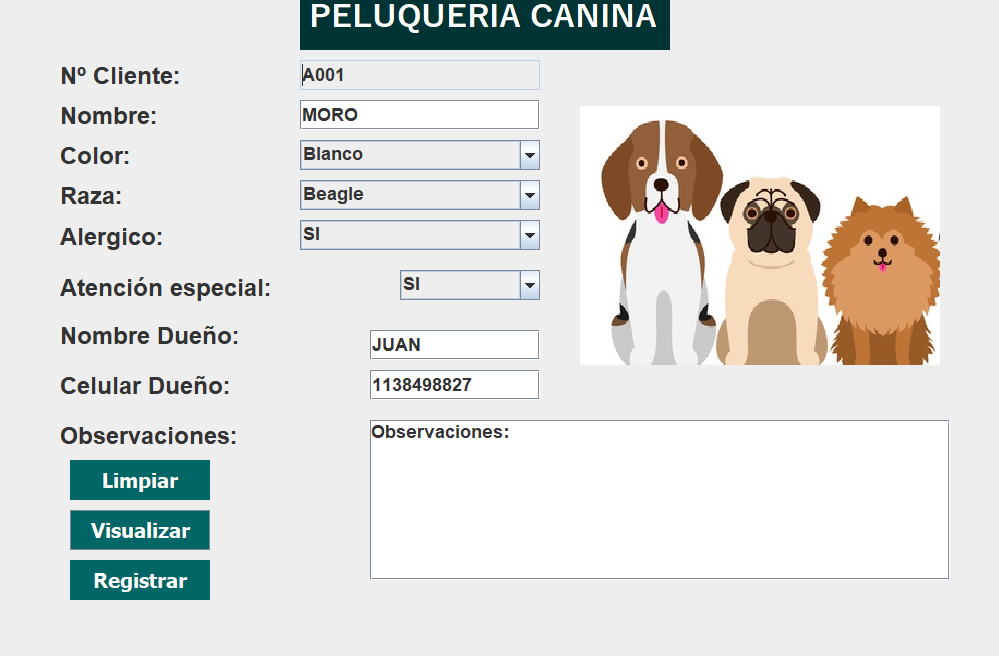

Tecnologías
Tecnologías que empleo para el desarrollo de mis aplicaciones


UML
Git
MySQL
Java
HTML5
CSS3
Conocimientos
- Conocimientos avanzados en Java POO para la reutilización y organización del código,
Java Swing para darle vida e interacción al software, y el uso de Maven para el importe de librerias. - El uso de MySQL para la implementación de base de datos de un sistema.
- El manejo de Git como gestor de repositorios para mis proyectos.
- Empleamiento de HTML5 y CSS3 para la estructura y estilos de mis sitios web.
- Diagramas en UML para la idealización del código.
- Utilización de IDE's como Apache NetBeans e IntelliJ IDEA.
- Inglés conversacional nivel B2.
Experiencia
Peluqueria Canina Proyecto que realizamos en equipo para una
exposición en el primer cuatrimestre de mi cursada.
Para el desarrollo de esta empleamos
Java Swing y Java POO.
18.06.24 - 27.06.24